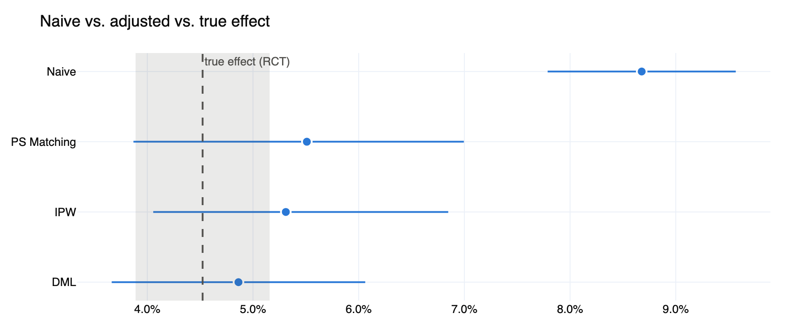
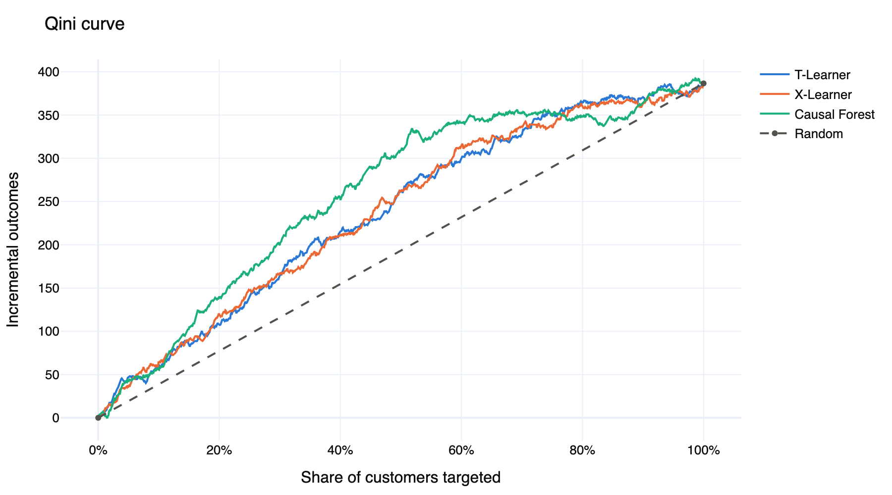
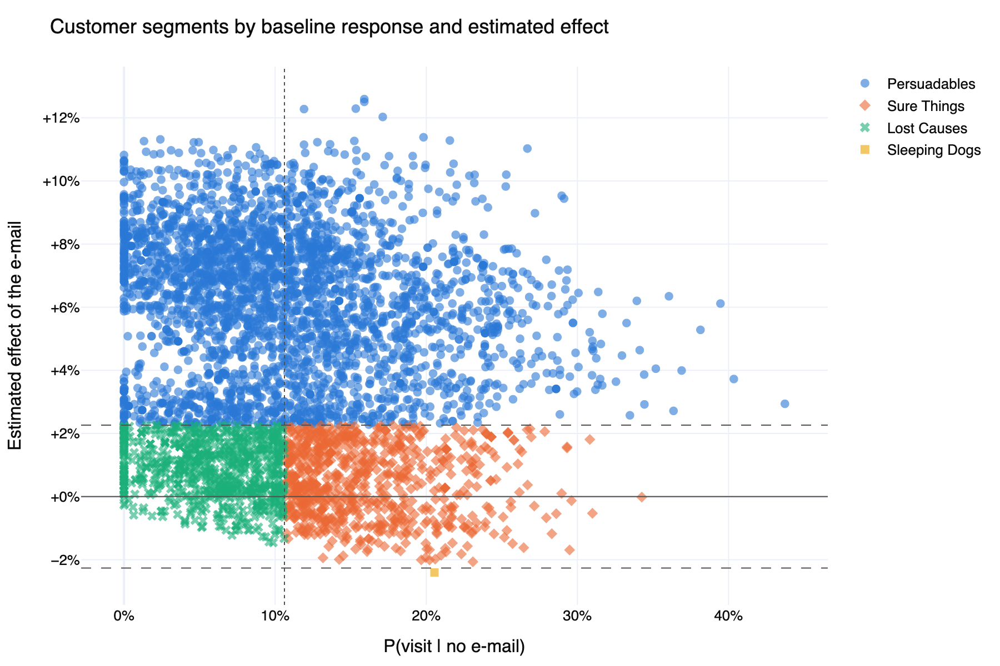

Did the campaign really work?
Causal inference and uplift modeling on the Hillstrom e-mail experiment and the Criteo uplift dataset.

Notebooks
- The randomized experiment: ATE with confidence intervals
- Observational data: confounding, PS matching, IPW, Double ML, refutation tests
- Uplift: meta-learners, causal forest, Qini curves, customer segments
- Scale: Criteo, 2M users

